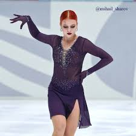
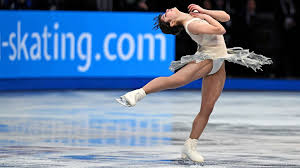
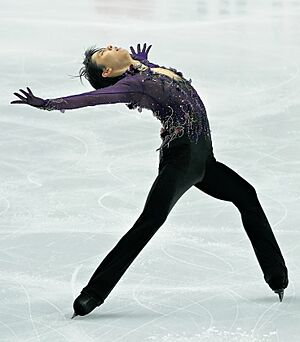

Figure Skating by Cassidy
Figure skating is an amazing sport, did you know that figure skatng is the worlds 18th hardest sport. Figure skating also used to be marked on wether or not a skater could make proper geometrical shapes during their performances using thier blades, and it counted for 60% of a skaters score.
Did you know that figure skating was the first winter sport to join the olympics?
Figure skating is a sport that has been famous for decades, both female and male can do this sport and consists of jumps, such as the axel, spins, such as the beillman, or field moves, such as the spiral or spread eagle. Figure skating will often have many artistic moves by moving their arms, legs, or body, and doing dance skills from ice dance, another popular form of skating.
There are many forms of figure skating such as singles for both men and woman, pairs with both men and woman, ice dance which can be single or pair, and lastly, synchronized skating where it is normally a group ofthe same gender that skate in sync. The key compitition segments are short programs, rythem dance, free skate, with the elements in each program varying depending on the skaters star level and capability.



Alexandra Ignatova| Date | Event | Description |
| 1742 | Traditional dance and roller skates encouraged an idea of figure skating and the basic fundamentals of the sport. | Figure skating is a complex sport done in stiff boots with heels and blades glued to the bottem for support, with the sport taing iff on a sheet of ice. Including many tricks both easy and hard. |
| 1908 | Figure skating takes its first appearance in the London Olympic Winter Games. | Figure skating continued to show up the multiple winter olympic games around the world. |
| 2026 | Figure skating continues to show up in the olympics with new skaters, skills, and forms of skating. | Gold, silver, and bronze medalists of the Olympics bond over thier dedication as the sport continues to gain recognition and popularity due to the popular skaters. |